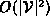
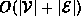

Data Structures and Algorithms
with Object-Oriented Design Patterns in Java
Data Structures and Algorithms
with Object-Oriented Design Patterns in JavaThe worst-case running time for Floyd's algorithm is easily determined. Creating and initializing the distance matrix is  (lines 6-9). Transferring the weights from the input graph to the distance matrix requires  time if adjacency lists are used, and time when an adjacency matrix is used to represent the input graph (lines 11-18).
The running time for the three nested loops
is  in the worst case.
Finally, constructing the result graph
and transferring the entries from the distance matrix
to the result requires time.
As a result, the worst-case running time of Floyd's algorithm
is
in the worst case.
Finally, constructing the result graph
and transferring the entries from the distance matrix
to the result requires time.
As a result, the worst-case running time of Floyd's algorithm
is  .
.
 Copyright © 1998 by Bruno R. Preiss, P.Eng. All rights reserved.
Copyright © 1998 by Bruno R. Preiss, P.Eng. All rights reserved.